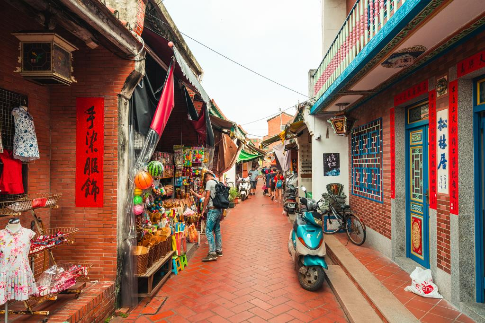

Introduction of my hometown by JingYi
Changhua (Hokkien POJ: Chiong-hòa or Chiang-hòa), officially known as Changhua City, is a county-administered city and the county seat of Changhua County in Taiwan Province of the Republic of China. For many centuries the site was home to a settlement of Babuza people, a coastal tribe of Taiwanese aborigines. Changhua city is ranked first by population among county-administered cities. It is part of the Taichung–Changhua metropolitan area.
Figure 1: Lukang Old Street is a famous street in Changhua.